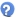
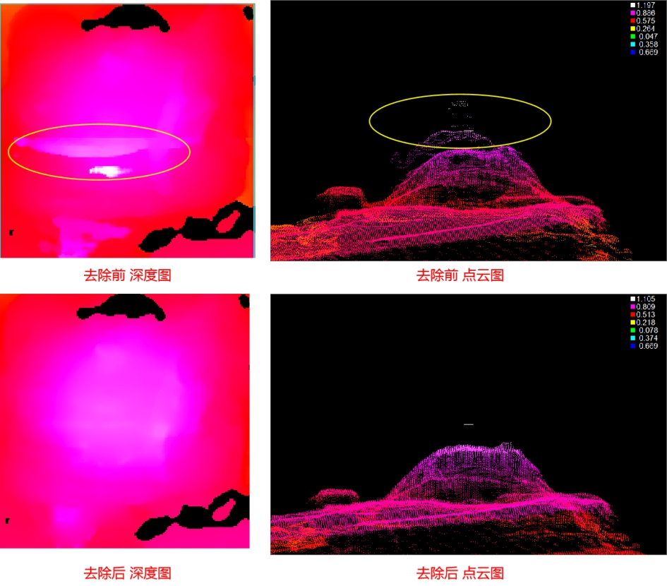
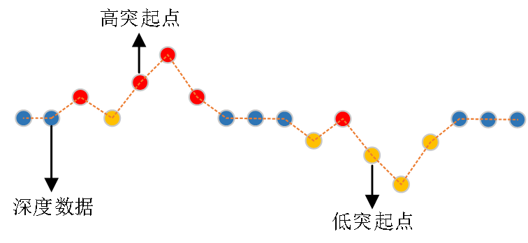
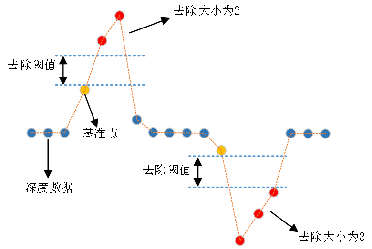
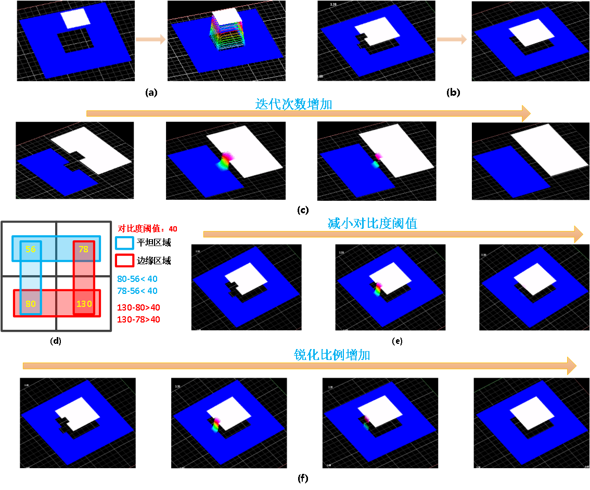

Trong các ứng dụng 3D, do ảnh hưởng của nguyên lý tạo ảnh của camera 3D, cài đặt tham số hoặc vật liệu sản phẩm, ảnh độ sâu thu được sẽ có một phần dữ liệu nhiễu. Phần dữ liệu nhiễu này sẽ ảnh hưởng nghiêm trọng đến kết quả đo. Để nâng cao độ chính xác của kết quả đo và loại bỏ ảnh hưởng của dữ liệu nhiễu, có thể sử dụng công cụ loại bỏ nhiễu đột biến. Chức năng của công cụ loại bỏ nhiễu đột biến là: loại bỏ các điểm dữ liệu nhiễu trong ảnh độ sâu (điểm dữ liệu nhiễu, tức là các điểm trong ảnh độ sâu cao hơn hoặc thấp hơn rõ rệt so với các điểm xung quanh, thường là điểm nhiễu), và sau khi loại bỏ, thông qua các điểm dữ liệu hợp lệ trong phạm vi vùng lân cận, lấp đầy vị trí của các điểm dữ liệu nhiễu, nâng cao tính hoàn chỉnh của ảnh độ sâu.

| Phân loại | Tên tham số | Mô tả tham số |
|---|---|---|
| Cửa sổ thuộc tính | Loại ROI | Loại vùng kiểm tra, gồm 5 loại: toàn bộ ảnh, ROI hình chữ nhật, ROI hình chữ nhật affine, ROI hình tròn, ROI hình elip. |
| Đối tượng loại bỏ | Có hiệu lực khi lựa chọn tham số ROI được bật, người dùng sử dụng ROI hình chữ nhật để chỉ định vùng tái tạo. |
|
| Hướng loại bỏ | Chọn điểm đột biến làm đối tượng loại bỏ, được chia thành đối tượng cao, thấp và cao thấp. |
|
| Số lượng điểm đột biến loại bỏ | Số lượng điểm dữ liệu đột biến cao hoặc thấp cần loại bỏ. Phạm vi giá trị là số nguyên trong [2, 1000]. |
|
| Ngưỡng loại bỏ | Giá trị chiều cao tối đa cho phép từ điểm dữ liệu đột biến đến điểm chuẩn, điểm đột biến lớn hơn ngưỡng loại bỏ sẽ bị loại bỏ. Phạm vi giá trị là số thực trong (0, 1000]. |
|
| Bật mask | Có bật mask hay không, chọn “Có” thì bật giao diện nâng cao, thiết lập mask thông qua giao diện nâng cao. | |
| Phương pháp lấp đầy | Sau khi loại bỏ điểm nhiễu, vị trí lỗ trống sau khi loại bỏ sẽ được lấp đầy. Tham số này dùng để chỉ định phương pháp lấp đầy, gồm ba loại: không, lấp đầy tuyến tính, lấp đầy phi tuyến. |
|
| Phương pháp tính giá trị độ sâu | Gồm 4 loại: lớn nhất vùng lân cận, nhỏ nhất vùng lân cận, nội suy vùng lân cận, chế độ toàn cục. Có hiệu lực khi tham số lấp đầy pixel bị thiếu chọn lấp đầy tuyến tính. |
|
| Hướng tìm kiếm pixel vùng lân cận | Gồm 3 loại: ngang, dọc, hai hướng, tức là trong chế độ vùng lân cận, phân tích các pixel hợp lệ ở hai phía theo phương ngang hoặc hai phía theo phương dọc hoặc hai phía theo cả phương ngang và phương dọc của pixel mục tiêu. Tham số này chỉ có hiệu lực trong chế độ vùng lân cận. | |
| Phương pháp tính chế độ toàn cục | Gồm 4 loại: lớn nhất toàn cục, nhỏ nhất toàn cục, trung bình toàn cục, giá trị cố định. Có hiệu lực khi tham số lấp đầy pixel bị thiếu chọn lấp đầy tuyến tính. | |
| Giá trị cố định của chế độ toàn cục | Tham số này chỉ có hiệu lực khi phương pháp tính chế độ toàn cục chọn giá trị cố định. Giá trị Z thực, do độ phân giải theo hướng trục Z của ảnh và offset khác nhau nên phạm vi giá trị thực khác nhau, đơn vị: mm. | |
| Phương pháp lấp đầy phi tuyến | Gồm 2 loại: lấp đầy làm mượt và lấp đầy giữ biên. |
|
| Chế độ lấp đầy | Gồm 4 loại: Parabolic，Parabolic Mailk，Weickert，Shock. Tham số này chỉ có hiệu lực trong lấp đầy giữ biên. |
|
| Số lần tính toán | Khi lấp đầy pixel bị thiếu, số lần thuật toán cần tính giá trị độ sâu của pixel cần lấp đầy. |
|
| Bước cập nhật | Kích thước bước cập nhật khi tính giá trị lấp đầy mới trong mỗi lần lặp. |
|
| Ngưỡng chiều cao biên | Vùng có chênh lệch chiều cao pixel lân cận lớn hơn ngưỡng được xem là biên. Giá trị Z thực, do độ phân giải theo hướng trục Z của ảnh khác nhau nên phạm vi giá trị thực khác nhau, đơn vị: mm. |
|
| Tỷ trọng lọc shock | Tỷ lệ Shock là: khi tính kết quả lấp đầy, tỷ trọng của lọc Shock trong kết quả tính, phạm vi giá trị là [0,1]. |
|
| Cường độ làm mượt | Trong quá trình lấp đầy ảnh độ sâu, cường độ lọc làm mượt ảnh. Nhiễu trong ảnh càng lớn thì cường độ làm mượt tương ứng cần tăng lên.  |
|
| Bật tính toán song song | Có bật tính toán song song hay không, khi chọn có, thuật toán sẽ bật phương thức tính toán song song OpenMp, có thể nâng cao tốc độ tính toán, nhưng có thể xuất hiện tình trạng thời gian xử lý không ổn định; khi chọn không, thuật toán sẽ tắt tính toán song song OpenMp. | |
| Phần trăm số luồng | Thiết lập phần trăm số luồng của tính toán song song, phạm vi hợp lệ là (0, 0.75], tương ứng biểu thị phạm vi phần trăm (0%, 75%]. | |
| Cửa sổ ảnh | Ảnh độ sâu đầu vào | Hiển thị ảnh độ sâu cần loại bỏ nhiễu. |
| Vùng ROI | Hiển thị vùng kiểm tra. | |
| Chuỗi dữ liệu | Ảnh độ sâu đầu vào | Nhập ảnh độ sâu cần loại bỏ nhiễu. |
| Biến đổi tuyến tính 2D | Biến đổi tịnh tiến, xoay, co giãn của mục tiêu so với template. | |
| Giao diện nâng cao | Khi lựa chọn bật mask là “Có”, giao diện nâng cao là giao diện thiết lập mask. |
| Phân loại | Tên tham số | Mô tả tham số |
|---|---|---|
| Cửa sổ giám sát | Ảnh độ sâu đầu ra | Xuất chiều dài, chiều rộng, kích thước pixel của ảnh độ sâu, cũng như tham số dữ liệu độ sâu. |
| Kết quả thực thi | Kết quả thực thi của công cụ. | |
| Thời gian thực thi | Thời gian thực thi của công cụ. | |
| Cửa sổ ảnh | Ảnh độ sâu đầu ra | Hiển thị ảnh kết quả thực thi của công cụ, giống với tham số ảnh độ sâu đầu ra trong cửa sổ giám sát. |
| Kết quả thực thi | Hiển thị kết quả thực thi của công cụ, thực thi thành công hiển thị “OK”, thực thi thất bại hiển thị “NG”, giống với tham số kết quả thực thi trong cửa sổ giám sát. | |
| Chuỗi dữ liệu | Ảnh độ sâu đầu ra | Xuất ảnh độ sâu sau khi loại bỏ nhiễu + lấp đầy, cung cấp cho các công cụ khác sử dụng. |
Đối tượng loại bỏ: chọn điểm đột biến làm đối tượng loại bỏ, gồm đối tượng cao, thấp và cao thấp, như hình 2.
Cao: chỉ loại bỏ các điểm đột biến cao hơn so với các điểm dữ liệu xung quanh, như điểm màu đỏ trong hình 2.
Thấp: chỉ loại bỏ các điểm đột biến thấp hơn so với các điểm dữ liệu xung quanh, như điểm màu vàng trong hình 2.
Cao thấp: loại bỏ hai loại điểm đột biến cao hơn và thấp hơn so với xung quanh, như điểm màu đỏ và màu vàng trong hình 2.

Hướng loại bỏ:chia thành các hướng loại bỏ X, Y và XY.
Hướng X: loại bỏ điểm dữ liệu đột biến theo hướng X của ảnh, giữ lại điểm dữ liệu đột biến theo hướng Y.
Hướng Y: loại bỏ điểm dữ liệu đột biến theo hướng Y của ảnh, giữ lại điểm dữ liệu đột biến theo hướng X.
Hướng XY: lần lượt loại bỏ điểm dữ liệu đột biến theo hướng X và Y của ảnh.

Kích thước loại bỏ:chỉ số lượng điểm dữ liệu đột biến cao hoặc thấp cần loại bỏ. Như hình 3, kích thước loại bỏ của điểm dữ liệu đột biến cao là 2, kích thước loại bỏ của điểm dữ liệu đột biến thấp là 3.
Điểm chuẩn:chỉ điểm tham chiếu khi loại bỏ điểm đột biến cao hoặc điểm đột biến thấp, như điểm màu vàng trong hình 3. Kích thước loại bỏ khác nhau thì điểm chuẩn được chọn cũng khác nhau.
Ngưỡng loại bỏ:chỉ giá trị chiều cao tối đa cho phép từ điểm dữ liệu đột biến đến điểm chuẩn, điểm đột biến lớn hơn ngưỡng loại bỏ sẽ bị loại bỏ, như hình 3.
Bản chất của lấp đầy tuyến tính là phân tích pixel hợp lệ trong vùng lân cận của pixel bị thiếu hoặc pixel toàn ảnh, để tính giá trị độ sâu cho pixel bị thiếu. Vì vậy, phương pháp tính giá trị độ sâu có thể chia thành chế độ vùng lân cận và chế độ toàn cục
Chế độ vùng lân cận:tính giá trị độ sâu của pixel bị thiếu bằng cách phân tích pixel vùng lân cận của pixel bị thiếu (hướng ngang, hướng dọc hoặc hai hướng). Cụ thể, chế độ vùng lân cận bao gồm ba chế độ: lớn nhất vùng lân cận, nhỏ nhất vùng lân cận, nội suy vùng lân cận. Trong đó, lớn nhất vùng lân cận/nhỏ nhất vùng lân cận lấy giá trị độ sâu lớn nhất/nhỏ nhất trong phạm vi vùng lân cận của pixel bị thiếu làm kết quả xử lý. Nội suy vùng lân cận thực hiện nội suy tuyến tính dựa trên vị trí và độ sâu của pixel vùng lân cận.
Chế độ toàn cục:tính giá trị độ sâu của pixel bị thiếu bằng cách phân tích tất cả pixel hợp lệ trong toàn ảnh, bao gồm bốn phương pháp: lớn nhất toàn cục, nhỏ nhất toàn cục, trung bình toàn cục và giá trị cố định. Lớn nhất toàn cục/nhỏ nhất toàn cục/trung bình toàn cục dùng giá trị pixel hợp lệ lớn nhất/nhỏ nhất/trung bình của toàn ảnh để lấp đầy tất cả pixel không hợp lệ. Phương pháp giá trị cố định dùng giá trị do người dùng nhập để lấp đầy pixel bị thiếu.

Phương pháp lấp đầy:phương pháp lấp đầy được sử dụng bởi công cụ lấp đầy phi tuyến pixel bị thiếu, hiện bao gồm hai phương thức: lấp đầy làm mượt và lấp đầy giữ biên. Đúng như tên gọi, lấp đầy làm mượt là trong quá trình lấp đầy pixel bị thiếu, giá trị độ sâu của pixel chuyển tiếp một cách mượt mà, phù hợp để lấp đầy pixel bị thiếu trong vùng phẳng; còn lấp đầy giữ biên thì trong quá trình lấp đầy, có thể giữ lại tốt thông tin biên của vật thể. Sơ đồ minh họa cụ thể như hình 4(a) và 4(b).
Chế độ lấp đầy:một số chế độ lấp đầy trong phương pháp lấp đầy giữ biên, chủ yếu bao gồm: Parabolic，Parabolic Mailk，Weickert，Shock và một số chế độ khác.
Số lần tính toán:khi lấp đầy pixel bị thiếu, cần tính giá trị độ sâu của pixel cần lấp đầy. Như hình 4©, khi số lần tính toán tăng lên, hiệu quả lấp đầy pixel bị thiếu liên tục được cải thiện.
Bước cập nhật:kích thước bước cập nhật khi tính giá trị lấp đầy mới trong mỗi lần lặp.
Ngưỡng chiều cao biên (tên cũ: ngưỡng tương phản)vùng có chênh lệch chiều cao pixel lân cận lớn hơn ngưỡng được xem là biên. Hình 4(d) cho thấy một kết quả phân chia vùng phẳng và vùng biên khi ngưỡng chiều cao biên được thiết lập là 40. Cần lưu ý rằng một pixel vừa có thể cùng pixel lân cận tạo thành vùng phẳng, vừa có thể đồng thời cùng pixel lân cận khác tạo thành vùng biên. Ví dụ: trong hình 4(d), giá trị gradient giữa 56 và 78 là 28, nhỏ hơn ngưỡng chiều cao biên, lúc này pixel tương ứng với 56 và pixel tương ứng với 78 tạo thành vùng phẳng; đồng thời, giá trị gradient giữa 78 và 130 là 52, lúc này pixel tương ứng với 78 và pixel tương ứng với 130 tạo thành vùng biên.
Như hình 4(e), đây là quan hệ tương đối giữa ngưỡng chiều cao biên và hiệu quả giữ biên trong vùng lấp đầy: nói chung, khi ngưỡng chiều cao biên giảm, hiệu quả giữ biên có thể được nâng cao.
Tỷ trọng lọc shock (tên cũ: tỷ lệ làm sắc nét):trong chế độ lấp đầy Shock, giá trị lấp đầy của pixel bị thiếu được tính bằng cách cộng theo tỷ lệ giữa giá trị lọc làm mượt của ảnh và giá trị lọc Shock. Tỷ lệ Shock là: tỷ trọng của lọc Shock trong kết quả lấp đầy, phạm vi giá trị là [0, 1]. Nếu tỷ lệ Shock là 0, nghĩa là kết quả lấp đầy được tính bằng lọc làm mượt ảnh; nếu tỷ lệ Shock là 1, nghĩa là kết quả lấp đầy được tính bằng lọc Shock. Tham số này chỉ được thiết lập trong chế độ Shock của phương pháp lấp đầy giữ biên. Hình 4(f) cho thấy quan hệ tương đối giữa tỷ lệ Shock và hiệu quả giữ biên trong vùng lấp đầy: nói chung, khi tỷ lệ Shock tăng, hiệu quả giữ biên có thể được nâng cao.
Cường độ làm mượt:trong quá trình lấp đầy ảnh độ sâu, cường độ lọc làm mượt ảnh. Nhiễu trong ảnh càng lớn thì cường độ làm mượt tương ứng cần tăng lên.
Step 1 Thiết lập tham số loại bỏ
Chủ yếu là thiết lập đối tượng loại bỏ (cao: loại bỏ điểm nhiễu nhô lên, thấp: loại bỏ điểm nhiễu lõm xuống, cao thấp: loại bỏ cả điểm nhiễu nhô lên và lõm xuống), hướng loại bỏ (X: loại bỏ theo hướng X, Y: loại bỏ theo hướng Y, XY: loại bỏ theo cả hai hướng), kích thước loại bỏ (càng lớn thì càng nhiều điểm đột biến bị loại bỏ) và ngưỡng loại bỏ (càng nhỏ thì càng nhiều điểm đột biến bị loại bỏ).
Step 2 Thiết lập tham số lấp đầy
Phương pháp lấp đầy gồm 3 loại: không lấp đầy, lấp đầy tuyến tính, lấp đầy phi tuyến.
Không lấp đầy:sau khi loại bỏ điểm nhiễu đột biến, không thực hiện lấp đầy, chỉ xuất ảnh độ sâu sau khi loại bỏ điểm nhiễu đột biến.
Lấp đầy tuyến tính:sau khi loại bỏ điểm nhiễu đột biến, sử dụng phương pháp lấp đầy tuyến tính để lấp đầy, và xuất ảnh độ sâu sau khi lấp đầy.
Lấp đầy phi tuyến:sau khi loại bỏ điểm nhiễu đột biến, sử dụng phương pháp lấp đầy phi tuyến để lấp đầy, và xuất ảnh độ sâu sau khi lấp đầy.
Các tham số cần thiết lập; nếu phương pháp lấp đầy được thiết lập là lấp đầy làm mượt, lúc này chỉ cần thiết lập tham số số lần tính toán; nếu phương pháp lấp đầy là lấp đầy giữ biên, cần thiết lập các tham số như số lần tính toán、bước cập nhật、cường độ làm mượt、ngưỡng chiều cao biên、tỷ trọng lọc shock：
Bước thứ nhất: chọn chế độ lấp đầy:một số chế độ lấp đầy trong phương pháp lấp đầy giữ biên, chủ yếu bao gồm: Parabolic，PeronaMailk，Weickert，Shock và một số chế độ khác. Đặc điểm và tình huống áp dụng của các chế độ có thể tham khảo bảng bên dưới.
Bước thứ hai: bước cập nhật:kích thước bước cập nhật khi tính giá trị lấp đầy mới trong mỗi lần lặp.Bước cập nhật mặc định là 1, thông thường tăng bước cập nhật đến 10 là đủ；
Bước thứ ba: số lần tính toán:trước tiên đặt số lần tính toán thành một giá trị lớn, ví dụ 5000, 10000, để đảm bảo khi tinh chỉnh tham số sau đó, hiệu quả sẽ không bị ảnh hưởng do số lần tính toán không đủ khiến không đạt hiệu quả lấp đầy.
Bước thứ tư: cường độ làm mượt:trong quá trình lấp đầy ảnh độ sâu, cường độ lọc làm mượt ảnh. Nhiễu trong ảnh càng lớn thì cường độ làm mượt tương ứng cần tăng lên.Trong chế độ Shock, cường độ làm mượt thường đặt là 3, tùy theo hiệu quả lấp đầy thực tế, nếu kết quả lấp đầy của vùng cần lấp đầy xuất hiện vùng dạng khối lớn, cần tăng cường độ làm mượt;trong các chế độ Parabolic, Parabolic Mailk và Weickert, cường độ làm mượt thường đặt nhỏ hơn 1, tùy theo chất lượng ảnh độ sâu thu được và kết quả lấp đầy thực tế (kết quả lấp đầy của vùng cần lấp đầy xuất hiện vùng dạng khối lớn), lúc này có thể tăng cường độ làm mượt thích hợp.
Bước thứ năm: ngưỡng chiều cao biên (tên cũ: ngưỡng tương phản)vùng có chênh lệch chiều cao pixel lân cận lớn hơn ngưỡng được xem là biên. Hình trên (d) cho thấy một kết quả phân chia vùng phẳng và vùng biên khi ngưỡng chiều cao biên được thiết lập là 40. Cần lưu ý rằng một pixel vừa có thể cùng pixel lân cận tạo thành vùng phẳng, vừa có thể đồng thời cùng pixel lân cận khác tạo thành vùng biên. Ví dụ: trong hình trên (d), giá trị gradient giữa 56 và 78 là 28, nhỏ hơn ngưỡng chiều cao biên, lúc này pixel tương ứng với 56 và pixel tương ứng với 78 tạo thành vùng phẳng; đồng thời, giá trị gradient giữa 78 và 130 là 52, lúc này pixel tương ứng với 78 và pixel tương ứng với 130 tạo thành vùng biên.
Trong dự án thực tế, ngưỡng chiều cao biên cần được điều chỉnh nhiều lần mới có thể đạt được giá trị cần thiết. Có thể thông qua hiệu quả để nhận biết tham số quá lớn hay quá nhỏ. Khi ngưỡng quá lớn sẽ xuất hiện hiệu quả như hình bên trái, phần biên bị sụp hoặc dính quá mức; khi ngưỡng quá nhỏ sẽ xuất hiện hiện tượng như hình bên phải, xuất hiện nhiều lớp biên.


Việc thiết lập ngưỡng chiều cao biên cần xác định theo chênh lệch gradient biên, cụ thể có thể tham khảo định nghĩa của ngưỡng chiều cao biên;nói chung, khi ngưỡng chiều cao biên giảm, hiệu quả giữ biên có thể được nâng cao, như hình trên (e).
Bước thứ năm: tỷ trọng lọc shock (tên cũ: tỷ lệ làm sắc nét):trong chế độ lấp đầy Shock, giá trị lấp đầy của pixel bị thiếu được tính bằng cách cộng theo tỷ lệ giữa giá trị lọc làm mượt của ảnh và giá trị lọc Shock. Tỷ trọng lọc Shock là: tỷ trọng của lọc Shock trong kết quả lấp đầy, phạm vi giá trị là [0, 1]. Nếu tỷ trọng lọc Shock là 0, nghĩa là kết quả lấp đầy được tính bằng lọc làm mượt ảnh; nếu tỷ trọng lọc Shock là 1, nghĩa là kết quả lấp đầy được tính bằng lọc Shock. Tham số này chỉ được thiết lập trong chế độ Shock của phương pháp lấp đầy giữ biên. Như hình trên (f), đây là quan hệ tương đối giữa tỷ lệ Shock và hiệu quả giữ biên trong vùng lấp đầy: nói chung, khi tỷ trọng lọc Shock tăng, hiệu quả giữ biên có thể được nâng cao.
Bước thứ sáu: số lần tính toán:từ từ giảm số lần tính toán, giảm thời gian xử lý của công cụ với điều kiện không ảnh hưởng đến hiệu quả xử lý.
Bảng dưới đây là đặc điểm và tình huống áp dụng của một số phương pháp trong lấp đầy giữ biên, người dùng có thể lựa chọn phương pháp theo hiệu quả lấp đầy cuối cùng cần đạt được.
| Phương pháp lấp đầy | Chế độ lấp đầy | Đặc điểm phương pháp | Tình huống áp dụng |
|---|---|---|---|
| Lấp đầy làm mượt | Lấp đầy làm mượt | Kết quả lấp đầy chuyển tiếp mượt mà với các pixel xung quanh | Phù hợp để lấp đầy pixel bị thiếu trong vùng phẳng, bao gồm vùng ngang và vùng nghiêng. Cần thiết lập số lần lặp, tùy theo kích thước vùng, thông thường thiết lập khoảng 200-1000. |
| Lấp đầy giữ biên | Parabolic | Kết quả lấp đầy có thể làm giảm quá trình chuyển tiếp làm mượt của pixel bị thiếu tại biên, nhưng không thể loại bỏ hoàn toàn hiệu ứng làm mượt | Khuyến nghị ưu tiên sử dụng chế độ Shock và chế độ Parabolic Mailk để lấp đầy ảnh độ sâu |
| Parabolic Mailk | Kết quả lấp đầy có thể cơ bản loại bỏ hiệu ứng làm mượt của pixel bị thiếu tại biên ảnh. Thời gian xử lý ngắn hơn Weickert | Phù hợp để lấp đầy pixel bị thiếu trong vùng biên, trong đó vùng biên có thể nằm bên trong vùng ngang hoặc bên trong vùng nghiêng. Chế độ này cần thiết lập các tham số như số lần lặp, bước lặp, ngưỡng chiều cao biên, cường độ làm mượt | |
| Weickert | Kết quả lấp đầy có thể cơ bản loại bỏ hiệu ứng làm mượt của pixel bị thiếu tại biên ảnh. Thời gian xử lý dài hơn PM | Phù hợp để lấp đầy pixel bị thiếu trong vùng biên, trong đó vùng biên có thể nằm bên trong vùng ngang hoặc bên trong vùng nghiêng. Chế độ này cần thiết lập các tham số như số lần lặp, bước lặp, ngưỡng chiều cao biên, cường độ làm mượt | |
| Shock | Kết quả lấp đầy có thể loại bỏ khá tốt hiệu ứng làm mượt của pixel bị thiếu tại biên ảnh | Phù hợp để lấp đầy pixel bị thiếu trong vùng ngang (bao gồm vùng phẳng và vùng biên). Nhưng không phù hợp để lấp đầy pixel bị thiếu trong vùng nghiêng. Chế độ này cần thiết lập các tham số như số lần lặp, bước lặp, ngưỡng chiều cao biên, cường độ làm mượt |
Step 3 Thực thi công cụ và xuất kết quả
Sau các bước trên, có thể thực thi công cụ và nhận được ảnh độ sâu sau xử lý.
Tham khảo “\Samples\3D\深度图\去除突起干扰工具.gvp”.